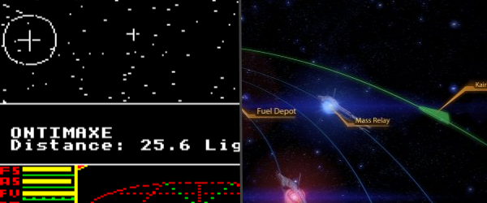

My boss often jokes that if a game was made after 1995, I'm not interested. Not exactly true, but...
A nice article from Evan Stubbs pointing out just how derivative most of what we are playing now essentially is.

"I believe there’s still lessons to be learned by studying and playing the classics. I believe that it’s fundamentally important to have a strong grounding in the history in which one designs and writes; the twisted thing is though, I can’t explain why it’s important. Often, their mechanics are somewhat broken, their graphics pitifully archaic by modern standards, and their difficulty punishing; by comparison, modern games are a marvel of design, similar to comparing the Kitty Hawk to an A380. And yet surely, if it’s been done before, isn’t it important to know about it and understand how it was done?"